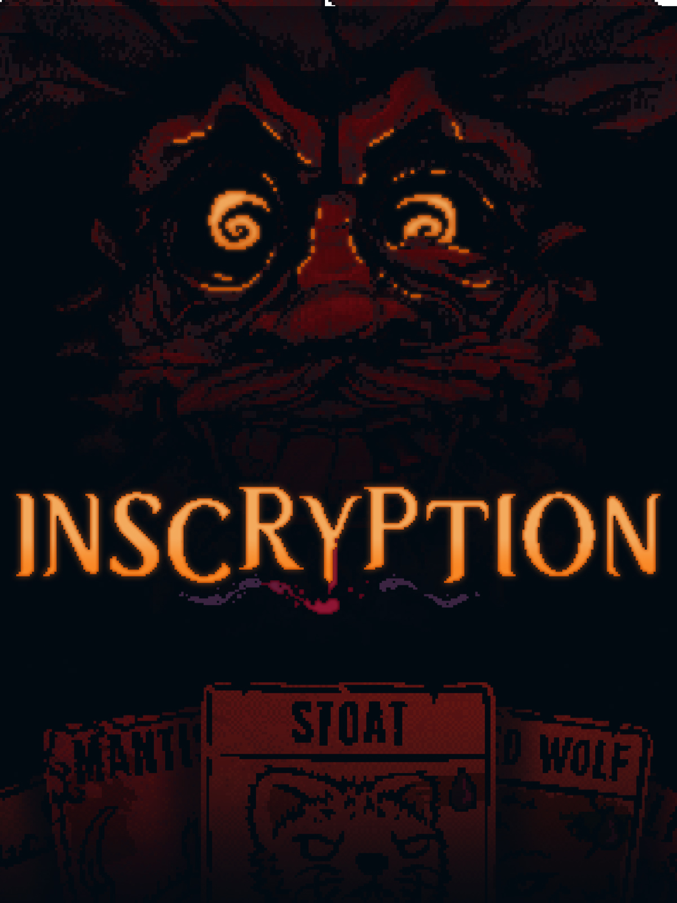

Meu nome é Jonatas Nascimento Oliveira. Tenho 23 anos e moro na cidade de São Paulo. Fui atendente de farmácia, mas há pouco tempo entrei no mundo da programação e estou me desenvolvendo na área. Neste site, você irá conhecer um pouco mais sobre mim e sobre os meus gostos. Aproveite a estadia!
Hobbies e Interesses
Música
In My Feelings… (YouTube Music Playlist)
Algumas músicas para um momento mais relax ou baixo astral do
dia. Músicas que irão te fazer chorar e lembrar, ou para de
chorar e superar…
Clique aqui para acessar.
")
Uns KPOP Legal (YouTube Music Playlist)
Eu ainda sou meio novato no KPop, mas essas são algumas das
músicas que eu acho muito interessante do gênero. Tem umas
músicas bem animadas aí, então já prepara a pista de dança!
Clique aqui para acessar.
Um Eu Aleatório (YouTube Music Playlist)
Essa aqui tem diversas músicas que eu curto no geral. Pode ser
que seja meio misturada, mas ouvi dizer que eclético é bom!
Clique aqui para acessar.
BandLab
Se você gostou das músicas que curto, talvez goste das músicas
que eu faço. O BandLab é um aplicativo para composição de
músicas com ferramenta social para o compartilhamento das
mesmas. Lá, pode ou não ter algumas músicas minhas..
Enfim, clique aqui para acessar.
Filmes, Séries e Vídeos
Fonte da Imagem: AdoroCinema.
Gatos Não Sabem Dançar (1997)
Um dos filmes da minha infância que eu assistia na TV aberta.
O filme conta a história do gato Danny, que viaja para
Hollywood em busca de chegar ao estrelato. Chegando lá, ele vê
que esse não será um sonho fácil de se realizar, especialmente
se depender de uma mimada artista mirim.
Veja mais sobre o filme aqui.
Fonte da Imagem: AdoroCinema.
Divertida Mente (2015)
Sim, mais um filme infantil, porque eles trazem as melhores
lições. O filme conta de forma divertida como Riley lida com
as emoções do que enfrenta no dia a dia. Somos apresentados de
forma lúdica às emoções que estão na cabeça de Riley, e como
elas tentam, de forma atrapalhada, lidar com os acontecimentos
da vida da garota. Mas, comicidade à parte, o filme aborda um
assunto muito importante, que é a saúde mental, especialmente
na fase da adolescência, onde os sentimentos podem estar
confusos.
Veja mais aqui.
Fonte da Imagem: AdoroCinema.
Doctor Who
E aqui veremos enfim meu lado nerd. Confesso que não acompanho
a série clássica, mas gosto muito da série atual do Doutor, um
ser de outro planeta, que viaja pelo tempo e espaço com a sua
máquina do tempo: a TARDIS. Ao lado de seus acompanhantes,
exploramos universos e eras, enquanto também o Doutor tenta
deixar a linha do tempo e o universo intactos.
Veja mais sobre a série aqui.
Fonte da Imagem: AdoroCinema.
The Rain
Uma série da Netflix, que apesar de ser curta, eu considerava
promissora. A história acompanha dois jovens irmãos que
precisam sobreviver em um mundo doente por causa de uma chuva
tóxica que dizimou grande parte do país. Após anos de
isolamento, se protegendo dos efeitos da chuva, os irmãos
precisam sair e encarar esse mundo se quiserem continuar
vivos.
Veja mais sobre a série aqui.
")
Fonte da Imagem: Fandom Wiki.
O Segredo Na Ilha - RPG
Um dos hobbies que descobri recentemente: o RPG. E por onde
comecei foi por esta temporada spin-off da série de RPGs Ordem
Paranormal, criado pelo streamer Cellbit. Nesta temporada,
iremos desvendar a ilha de Típora, que isolada do continente e
da tecnologia esconde vários segredos.
Veja aqui.
Fonte da Imagem: YouTube.
Blender para iniciantes, Modelagem de Asset - Baú (YouTube Playlist)
Um dos meus hobbies foi descobrir como são feitas animações e
modelagens em 3D. Em minhas explorações, este foi um dos
tutoriais que segui para fazer a modelagem de um baú. Fica a
dica.
Veja aqui.
Jogos
 - Fonte: Wikipedia")
Fonte da Imagem: Wikipedia.
Resident Evil 4
Apesar de eu gostar da saga inteira de Resident Evil,
apresento o 4 pois foi o que eu tive a experiência de jogar.
Vou admitir que olhando hoje em dia, a história é meio tosca,
mas se focar na parte de zumbis, gênero survival horror, ele é
um jogo interessante. As campanhas extras da Ada também
prolongam positivamente a experiência do jogo.
Veja mais clicando aqui.

Fonte da Imagem: Epic Games.
Inscryption
Se me dissessem apenas que este é um jogo de cartas, ele não
me chamaria tanto a atenção. Mas o que realmente interessa
neste jogo é a história e o mistério que começa a se
desenrolar à medida que você avança neste jogo. Não é apenas
um jogo de cartas. Algo mais obscuro acontece aqui.
Veja mais clicando aqui.
")
Fonte da Imagem: Epic Games.
Five Nights at Freddy's: Security Breach
Talvez você conheça os primeiros jogos da saga, e realmente
ele não parece ser tão interessante. Acredito que o que torna
essa série mais interessante seja a lore do game. E Security
Breach prova isso, sendo um jogo mais de exploração do que
jumpscares, como seus antecessores. O Freddy que antes nos
atemorizava, neste jogo irá nos auxiliar a escapar da
pizzaria, em que há animatrônicos e uma segurança cujas
intenções não são tão claras.
Veja mais clicando aqui.
Programação
Este site
Este site está sendo um dos meus primeiros projetos públicos. Atualmente, ele está desenvolvido usando apenas a linguagem HTML e CSS. Fique à vontade para explorá-lo.
Mais por vir
Ainda terei muito mais programas para apresentar. Fique de olho!
Me mande uma mensagem!
Ou me encontre através das redes: